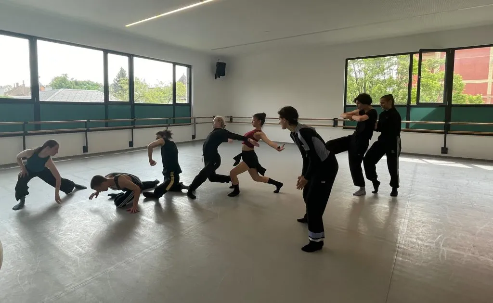

07 / TEACHING / FACILITATION
Dance teaching and workshops.
Dance teaching informed by performance, collaboration and curiosity.
Balance structure and discovery
A class needs enough structure to let people work with confidence and enough room for them to discover their own response.
Facilitate the class
I bring experience as a performer, choreographer and workshop leader to the way I frame movement tasks, observe responses and adapt the next instruction. I like the idea of scaffolding and building each day on the phrases we learnt before.
Reflect and adapt
Students with more awareness for the quality of movement and the reason for making a certain movement.
